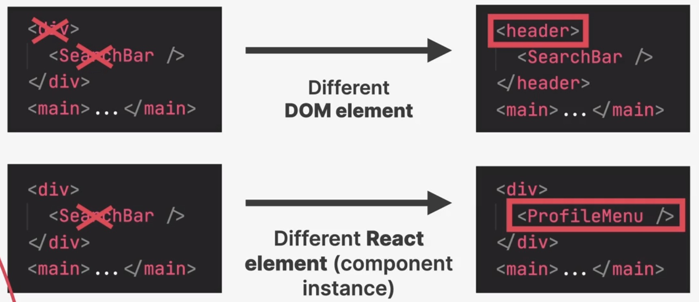
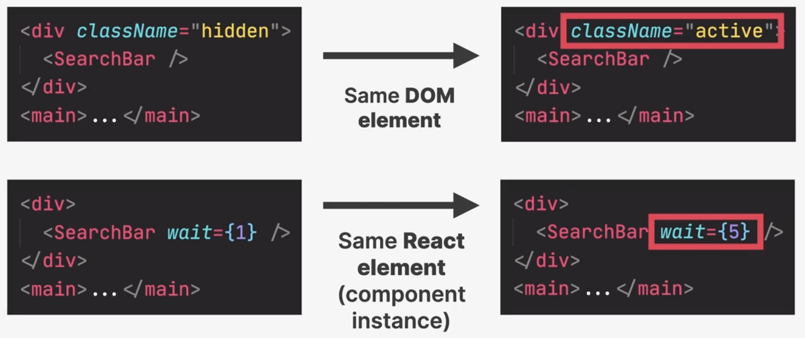
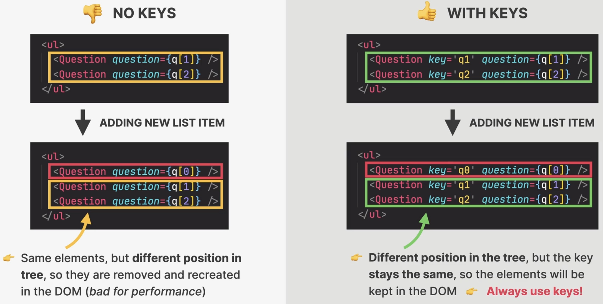
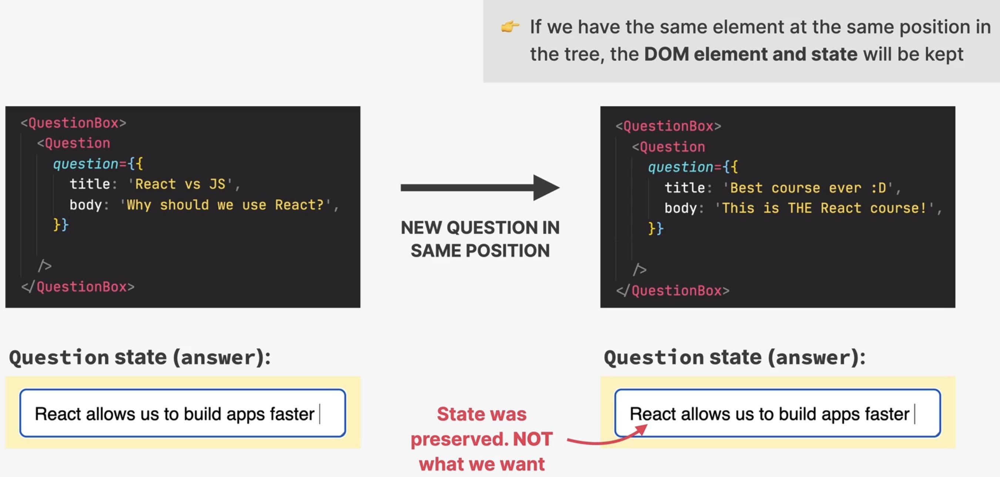
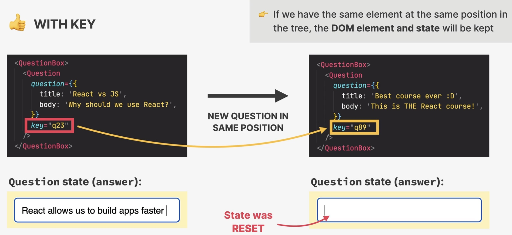

How diffing works
Two fundamental assumptions (rules):
Two element of different types with produce different trees
Elements with a stable
keyprop stay the same across renders
Only two situations:
Same position, different element
React assumes, the sub-tree of the different element to be no longer valid
Old components are destroyed and removed from DOM, including state
Rebuilding a tree, resets all state of the children

Same position, different element
Same position, same element
element will be kept (as well as child elements), including state
new props / attributes are passed if they changed between renders
Sometimes this is not what we want -> then we can use the
keyprop

Same position, same element
The key prop
Special prop to tell the algorithm that an element is unique
Works for both React and DOM elements
Allows React to distinguish between multiple instances of the same component type
When a key stays the same across renders, the element will be kept in the DOM (even if the position in the tree changes)
using keys in lists
When a key changes between renders, the element will be destroyed and a new one will be created (even if the position in the tree is the same as before)
Using keys to reset state
1. Keys in lists (stable key)

Setting key will not re-create non-changing list elements
2. Using keys to reset state (changing key)
Elements don’t change their position, but still require to update their state:

Without key, the state will not change (as element is kept as is)

By updating the elements key, it is re-rendered, state is reset